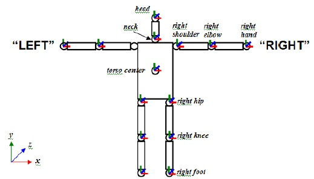
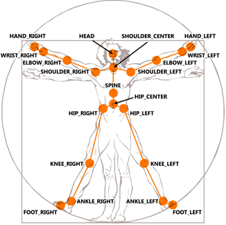
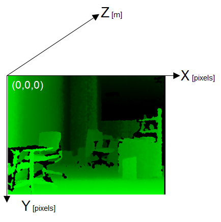
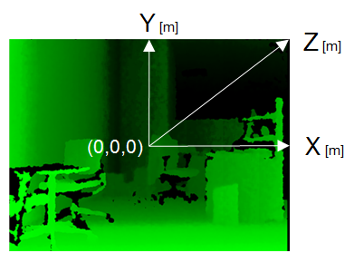
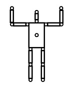

NID Skeleton
Return skeleton joints data from Kinect device.
Contents
Input Signal
- SYNC (uint32): IMAQ synchronization time in msec.
Output Signals
- Tracking (int32): Number of people in skeleton tracking.
- Skeleton (double): XYZ coordinates of skeleton joints. Either Real world or Projective coordinate can be configured.
[OpenNI]
Total 15 skeleton joints are tracked. If a XYZ joint data is [0 0 0], it means that the joint position could not be recognized. Index number of skeleton joints data represents Head = 1, Neck = 2, Torso = 3, Left shoulder = 4, Left elbow = 5, Left hand = 6, Right shoulder = 7, Right elbow = 8, Right hand= 9, Left hip = 10, Left knee = 11, Left foot = 12, Right hip = 13, Right knee = 14, Right foot = 15. Left and Right are mirrored (it's not tracking user's point of view, but viewpoint from NID).

[Kinect SDK for Windows]
Total 20 skeleton joints are tracked. If a XYZ joint data is [0 0 0], it means that the joint position could not be recognized. Index number of skeleton joints data represents Hip center = 1, Spine = 2, Shoulder center = 3, Head = 4, Shoulder left = 5, Elbow left = 6, Wrist left = 7, Hand left = 8, Shoulder right = 9, Elbow right = 10, Wrist right = 11, Hand right = 12, Hip left = 13, Knee left = 14, Ankle left = 15, Foot left = 16, Hip right = 17, Knee right = 18, Ankle right = 19, Foot right = 20.

- Image (uint8): RGB24 image of skeleton.
Block Parameters
- Max number of Skeleton Tracking: Maximum number of people in skeleton tracking. If 2 is configured, addtional Skeleton output will be added.
- Real world coordinates (Default: Projective): Choose Real world (X, Y, Z in meter) or Projective (X, Y in pixel and Z in meter) coordinates for skeleton joints.
Projective coodinates:

Real world coodinates:

- Image output: Return RGB24 image of skeleton.
Calibration for Skeleton tracking (for only OpenNI)
Note that calibration for skeleton tracking is required for only Need PSI pose for calibration of Skeleton tracking in IMAQ block is checked or pose less calibration unsupported OpenNI was used.
The skeleton tracking calibration requires the following steps:
- Start simulation.
- If a person moved in front of the device, person shape should be appeared in the display.
- The person needs to take a calibration pose called “PSI” to start calibration.

- Once the calibration pose is recognized, the color of the motion detected shape should be turned to white and keep the calibration pose until skeleton tracking begins.
- While skeleton tracking is performed, small crosses '+' are drawn at the skeleton joints position on the motion detected shape in the display of Image output.